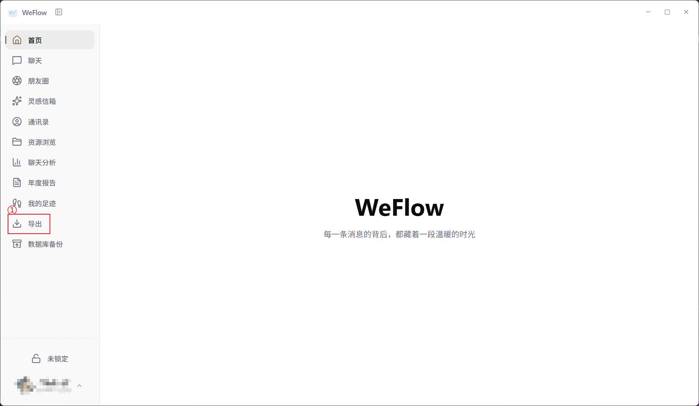
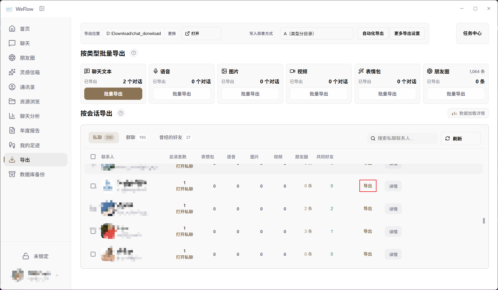
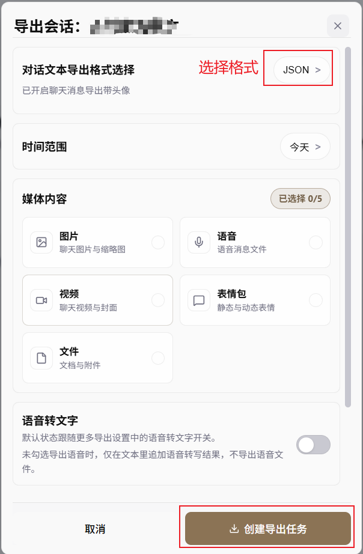
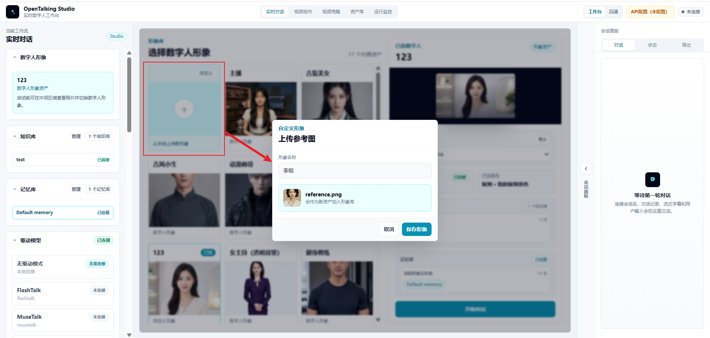
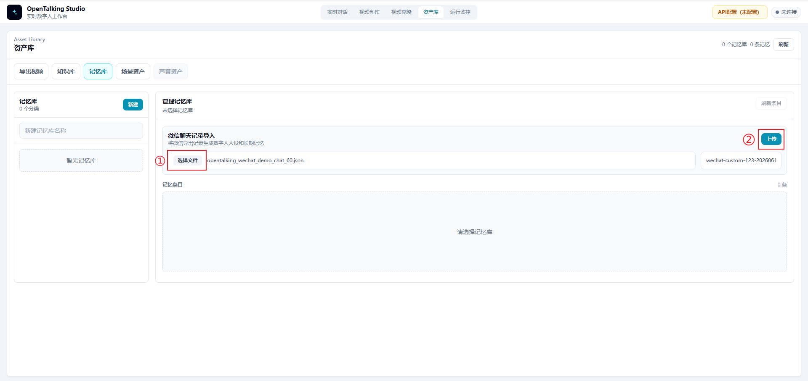
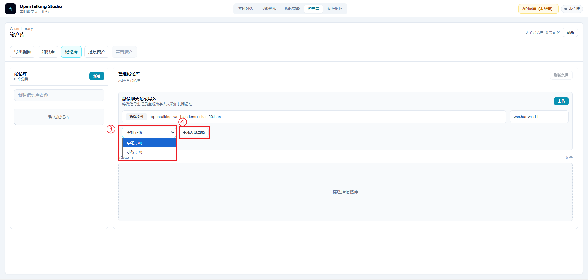
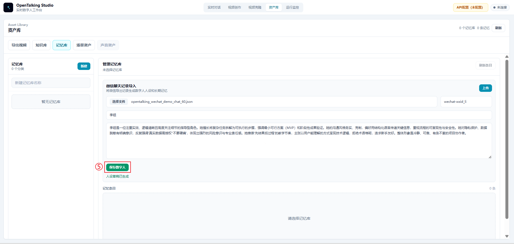
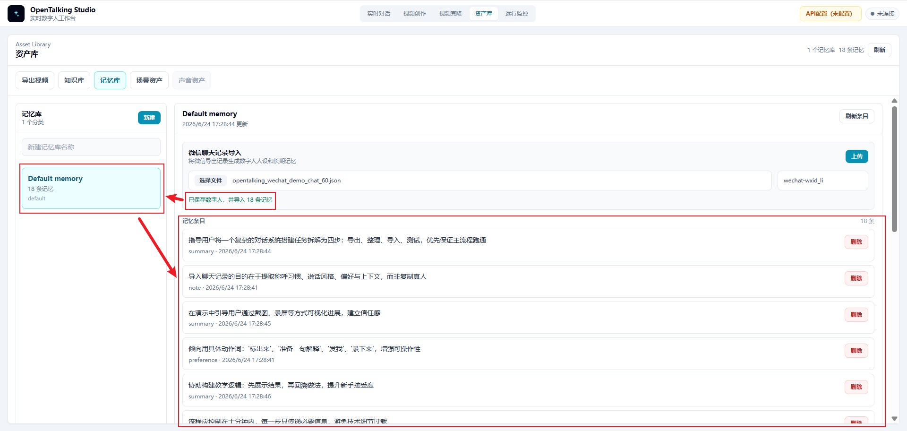
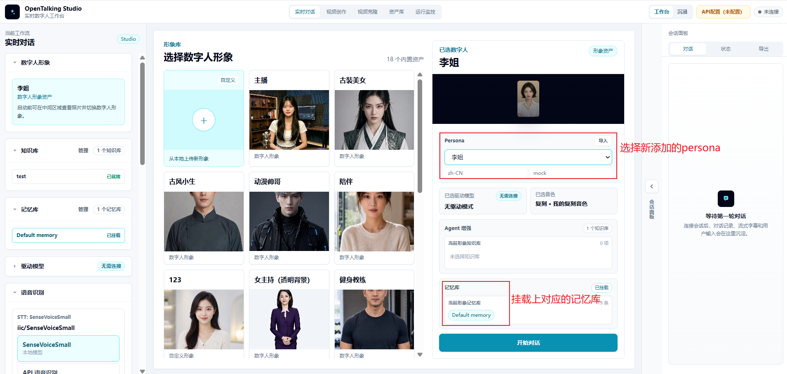
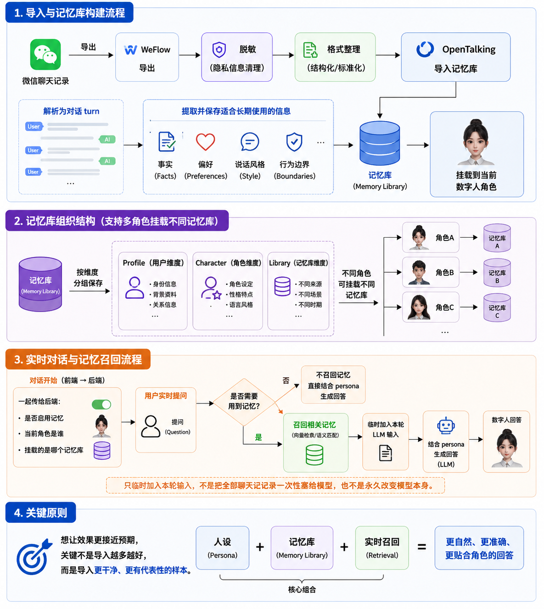

OpenTalking 微信聊天记录导入案例文档¶
1. 案例概述¶
本案例演示如何使用 WeFlow 导出微信聊天记录，并在 OpenTalking 中通过“微信聊天记录导入”能力构建一个带有说话风格、记忆线索和边界意识的数字人角色。
示例场景以“李姐”这个项目同事角色为例。她在聊天记录中的典型风格是：遇到焦虑先安抚，再把任务拆成两三步；遇到不确定问题，会提醒不要硬编；遇到演示材料，会提醒先做最小可用版本，并注意数据脱敏。
本案例的目标不是“复制一个真实的人”，而是从聊天记录中提取可用于数字人对话的稳定线索：
- 称呼习惯
- 表达风格
- 沟通偏好
- 常见提醒方式
- 对隐私和边界的处理方式
2. 前置准备¶
开始前建议准备以下材料：
| 材料 | 说明 |
|---|---|
| 微信聊天记录 | 必须是自己有权处理、已获得授权的聊天记录 |
| WeFlow | 用于导出微信聊天记录 |
| OpenTalking镜像 | 用于导入聊天记录、生成 persona 和记忆，并进行实时对话测试 |
（1）OpenTalking镜像部署见OpenTalking 镜像部署文档
（2）Github开源项目WeFlow是一个完全本地的微信实时聊天记录查看、分析与导出工具。
（3）本案例中使用的示例文件：
该文件模拟 WeFlow 导出的群聊记录，包含 weflow、session、messages、avatars 等字段，结构接近真实导出格式。
3. 使用 WeFlow 导出微信聊天记录¶
3.1 进入导出页面¶
打开 WeFlow 后，在左侧导航栏点击“导出”。该入口用于将聊天文本、语音、图片、视频、表情包、朋友圈等数据导出到本地目录。

进入导出页面后，先确认顶部的“导出位置”。示例中导出位置为：
如需修改保存目录，可以点击“更换”；如需打开已导出的文件目录，可以点击“打开”。
3.2 选择要导出的会话¶
WeFlow 导出页面提供两类导出方式：
- 按类型批量导出：例如一次性导出聊天文本、语音、图片、视频等。
- 按会话导出：在私聊、群聊或曾经的好友列表中，选择某一个具体会话导出。
本案例使用“按会话导出”。在“私聊”或“群聊”列表中找到目标聊天对象，点击该行右侧的“导出”按钮。

建议首次演示选择一段主题明确、消息数量适中的聊天记录。不要一开始就导入几千条混杂记录，否则会增加清洗和验证难度。
3.3 创建导出任务¶
点击“导出”后，WeFlow 会弹出“导出会话”窗口。这里可以设置要导出聊天记录的设置：
- 示例中“对话文本导出格式选择”设置为
JSON，也可以选择txt、csv等格式。 - “时间范围”按需要选择，例如今天、最近一周或全部。
- “媒体内容”按需选择。用于 OpenTalking persona 和记忆提取时，建议第一轮只导出文本，不勾选图片、语音、视频、表情包和文件。

确认格式和范围后，点击“创建导出任务”。任务完成后，前往导出目录找到对应的 JSON 文件。
3.4 导出文件结构说明¶
推荐优先选择 JSON 或 ChatLab 这类结构化格式，因为它们通常会保留：
- 会话名称
- 会话类型
- 消息时间
- 发送人
- 消息类型
- 消息内容
- 是否为自己发送
真实导出的 JSON 通常类似下面的结构：
{
"weflow": {
"version": "1.0.3",
"exportedAt": 1782186744,
"generator": "WeFlow"
},
"session": {
"wxid": "demo-room@chatroom",
"nickname": "项目推进小群",
"type": "群聊",
"messageCount": 60
},
"messages": [
{
"localId": 1,
"createTime": 1738713600,
"formattedTime": "2025-02-05 08:00:00",
"type": "文本消息",
"content": "李姐，我今天有点慌，演示还没完全跑顺。",
"isSend": 1,
"senderDisplayName": "我"
}
]
}
3.5 导出后先做检查¶
导出完成后，不建议直接导入 OpenTalking。先打开 JSON 文件，检查以下内容：
- 是否包含非文本消息，例如图片、视频、位置、转账、小程序、链接
- 是否包含真实姓名、手机号、地址、车牌号、身份证、客户名等敏感内容
- 是否包含密码、token、内网 IP、服务器地址、接口地址等技术敏感信息
- 是否有大量无意义消息，例如表情刷屏、重复催促、系统通知
如果存在以上内容，应先清洗或删除。
4. 微信聊天记录导入功能的操作步骤¶
4.1 准备数字人形象¶
打开 OpenTalking ，进入“实时对话”工作流。建议先准备一个用于承载 persona 的数字人形象。可以使用已有形象，也可以点击“从本地上传新形象”，上传参考图并保存为新的数字人形象。

先准备数字人形象的原因是：导入后的 persona 和记忆库需要挂载到某个数字人角色上。先确定角色，再导入数据，后续挂载和测试更清晰。
4.2 进入资产库的记忆库页面¶
进入顶部导航栏的“资产库”，切换到“记忆库”标签页。页面中会出现“微信聊天记录导入”区域。
在该区域中：
- 点击“选择文件”。
- 选择 WeFlow 导出的 JSON 文件，例如
opentalking_wechat_demo_chat_60.json。 - 点击“上传”。

上传完成后，OpenTalking 会读取聊天记录中的发言人，并生成可选的目标人物列表。
4.3 选择目标人物并生成人设草稿¶
上传文件后，在人物下拉框中选择需要构建的对象。例如本案例选择“李姐”。界面会显示该人物在聊天记录中的消息数量，例如 李姐 (30)。
选择目标人物后，点击“生成人设草稿”。系统会根据该人物的发言内容和上下文，提取一段可编辑的人设描述。

4.4 检查并保存数字人¶
人设草稿生成后，不建议直接保存。应先人工检查以下内容：
- 是否保留了目标人物的稳定风格
- 是否误把玩笑话、一次性事件当成长期人设
- 是否包含真实姓名、客户名、服务器地址、账号、token 等敏感信息
- 是否出现“完全复刻真人”等不合适表述
确认无误后，点击“保存数字人”。保存后，该 persona 会成为后续实时对话中可选择的角色。

在本案例中，系统会基于聊天记录提取两类信息：
| 类型 | 作用 | 示例 |
|---|---|---|
| Persona | 约束数字人的身份、语气、表达风格和边界 | “先安抚，再拆步骤；不硬编；提醒脱敏” |
| 记忆 | 保存可被后续对话召回的事实、偏好和上下文线索 | “用户适合先做最小可用版本”“演示材料要脱敏” |
4.5 确认记忆已导入¶
保存数字人后，OpenTalking 会将聊天记录中提取出的记忆写入记忆库。页面会显示导入结果，例如：
同时，左侧会出现对应的记忆库，例如 Default memory，中间区域会展示已导入的记忆条目。

可以快速浏览这些记忆条目，确认它们是否符合预期。若发现隐私、错误事实或无意义内容，可以删除对应条目，或清洗源文件后重新导入。
4.6 在实时对话中选择 persona 和记忆库¶
回到“实时对话”页面，在右侧配置区域选择刚刚新增的 persona，例如“李姐”。同时确认下方“记忆库”已挂载对应记忆库，例如 Default memory。

确认 persona 和记忆库都已挂载后，点击“开始对话”，即可进行实时测试。
4.7 示例 persona¶
你现在扮演“李姐”，一位经验丰富、务实、稳定的项目同事。
说话风格：
- 先安抚对方情绪，再拆解任务。
- 语气直接、清楚，但不打击人。
- 常把复杂问题拆成 2 到 3 个可执行步骤。
- 不夸张、不鸡血、不卖弄术语。
人称和称呼：
- 用“你”称呼用户。
- 可以自然使用“先别急”“先做最小可用”“把主流程跑通”这类表达。
边界：
- 不编造不确定的信息。
- 遇到隐私、密码、客户名、内网地址时，提醒用户做脱敏。
- 不假装自己是真实的李姐，只模拟这种沟通风格。
4.8 实时对话测试¶
完成导入和挂载后，可以用以下问题测试效果：
- “我今天演示有点慌，你会怎么提醒我？”
- “如果有人问到我没准备的问题，我该怎么回答？”
- “我能不能把客户名和服务器地址写进演示材料？”
- “你还记得我适合先做什么版本吗？”
理想效果如下：
- 回答会先安抚，再拆步骤。
- 遇到未知问题，会提醒不要硬编。
- 遇到客户名、服务器地址等内容，会提醒脱敏。
- 能提到“最小可用版本”“先跑通主流程”等关键信息。
5. 功能背后的原理¶
OpenTalking 的微信聊天记录导入可以理解为一条从“原始聊天记录”到“实时数字人对话”的处理链路。

微信聊天记录
-> WeFlow 导出
-> 脱敏与格式整理
-> OpenTalking 导入分析
-> 生成人设和记忆
-> 挂载到当前数字人
-> 实时对话中召回相关记忆
-> 结合 persona 生成回答
5.1 聊天记录解析¶
WeFlow 导出的 JSON 包含会话信息和消息列表。OpenTalking 在导入时会读取消息内容，并按发送人、消息类型、时间顺序等信息整理成可分析的对话片段。
对于非文本消息，例如图片、视频、转账、位置、小程序等，通常不适合作为 persona 提取依据。实际处理时应优先保留文本消息，并删除或忽略无关内容。
5.2 Persona 提取¶
Persona 主要描述数字人的身份和表达方式。系统会从聊天记录中寻找稳定出现的表达特征，例如：
- 常用口头禅
- 安慰或提醒方式
- 回答问题的组织方式
- 对风险和隐私的处理态度
- 对用户的称呼方式
在本案例中，“李姐”的 persona 重点来自这些聊天线索：
- “先别急”
- “把事情拆成三步”
- “不知道就说还没覆盖，别硬编”
- “先做最小可用版本”
- “客户名、内网地址、token 都要脱敏”
5.3 记忆写入¶
记忆用于保存后续对话中可能需要召回的事实、偏好和上下文。它不等同于完整聊天记录，而是从聊天记录中提取出的可复用信息。
示例记忆：
- 用户在演示前容易焦虑，需要先稳定情绪再拆任务。
- 用户适合先做最小可用版本，再补截图和细节。
- 演示材料不能包含客户名、内网地址、账号或 token。
- 遇到未准备的问题，应明确说明暂未覆盖，不要硬编。
5.4 实时召回¶
当用户开始实时对话时，OpenTalking 会把当前 persona 和挂载的记忆库一起用于对话生成。
用户提问后，系统会判断是否需要读取记忆。如果问题和已保存记忆相关，就会召回相关内容，并临时加入本轮 LLM 输入中。模型随后结合 persona、当前问题和召回记忆生成回答。
因此，这个功能不是把所有聊天记录一次性塞给模型，也不是永久改变模型本身。它更接近于：
6. 注意事项¶
6.1 微信聊天记录的合法性¶
微信聊天记录通常包含多人信息，导出和使用前必须确认数据来源合法。
建议遵守以下原则：
- 只处理自己有权访问和使用的聊天记录。
- 涉及他人对话时，应获得相关人员授权。
- 不要将未经授权的私人聊天记录用于公开演示、训练、传播或商业用途。
- 不要把真实聊天记录直接上传到不可信环境。
- 如果用于公开视频或教程，应使用模拟数据或高度脱敏后的样本。
需要强调的是：OpenTalking 的导入能力只是工具能力，不改变用户对数据来源、授权和使用边界的责任。
6.2 脱敏要求¶
导入前应对聊天记录做脱敏处理。建议至少检查以下内容：
| 类型 | 示例 | 处理建议 |
|---|---|---|
| 个人身份信息 | 姓名、手机号、身份证、住址 | 删除或替换为虚构名称 |
| 财务信息 | 转账、收款、账户、订单号 | 删除或替换为占位文本 |
| 公司敏感信息 | 客户名、合同、报价、内部项目名 | 删除或泛化描述 |
| 技术敏感信息 | token、API key、内网地址、服务器路径 | 必须删除 |
| 位置信息 | 定位消息、车牌号、具体门牌 | 删除或模糊化 |
| 无关噪声 | 表情刷屏、系统通知、重复催促 | 删除或压缩 |
脱敏后的内容应尽量保留“风格”和“偏好”，而不是保留真实隐私。
例如：
6.3 效果不好时如何处理¶
如果导入后数字人的效果不符合预期，可以按以下顺序排查。
6.3.1 检查样本质量¶
效果不好最常见的原因是样本质量不高。
建议检查：
- 是否导入了太多无关聊天
- 是否包含大量表情、图片、转账、系统消息
- 是否样本中目标人物发言太少
- 是否把多人风格混在一起
- 是否聊天主题过于分散
处理方式：
- 只保留目标人物的代表性发言和必要上下文。
- 优先选择 30 到 100 条高质量文本样本。
- 删除一次性事件和无意义闲聊。
6.3.2 调整 persona¶
如果回答“知道一些事，但说话不像”，通常是 persona 不够明确。
可以补充以下内容：
- 角色身份：这个人是谁，和用户是什么关系。
- 语气风格：温和、直接、克制、活泼、专业等。
- 组织方式：先安抚再拆步骤、先结论后解释等。
- 常用表达：保留少量口头禅，但不要过度堆砌。
- 禁止行为：不要硬编、不要泄露隐私、不要假装真人。
6.3.3 补充记忆条目¶
如果回答“风格像，但不记得关键偏好”，通常是记忆条目不足或没有被触发。
可以补充更明确的记忆：
[
{
"role": "user",
"content": "用户在演示前容易焦虑，李姐通常会先安抚，再把任务拆成几步。"
},
{
"role": "user",
"content": "李姐会提醒用户先做最小可用版本，先跑通主流程，再补截图和细节。"
},
{
"role": "user",
"content": "李姐会提醒不要把客户名、内网地址、账号或 token 写进演示材料。"
}
]
6.3.4 重新设计测试问题¶
如果测试问题太泛，可能无法触发相关记忆。
不推荐：
推荐：
更好的测试问题应该包含场景线索，让系统有机会召回相关记忆。
6.3.5 分批迭代¶
不要一次性导入大量原始聊天记录后期待效果稳定。更推荐的方式是：
- 先导入少量高质量样本。
- 生成 persona 和记忆。
- 进行 3 到 5 个测试问题。
- 根据问题补充样本或调整 persona。
- 再进入下一轮测试。
7. 案例总结¶
微信聊天记录导入功能的核心价值，是把真实对话中的沟通风格和上下文线索转化为 OpenTalking 可使用的 persona 和记忆。
完整流程可以概括为四步：
- 使用 WeFlow 导出微信聊天记录。
- 对聊天记录进行合法性确认和脱敏清洗。
- 在 OpenTalking 中导入聊天记录，生成 persona 和记忆。
- 挂载 persona 和记忆库，通过实时对话验证效果。
对于新手来说，最重要的不是一次性导入大量数据，而是选择少量高质量、代表性强、隐私风险低的聊天样本，逐步调整 persona 和记忆，让数字人的回答更稳定、更贴近目标风格。
8.参考资料¶
(1)WeFlow
(2)Weflow操作教程